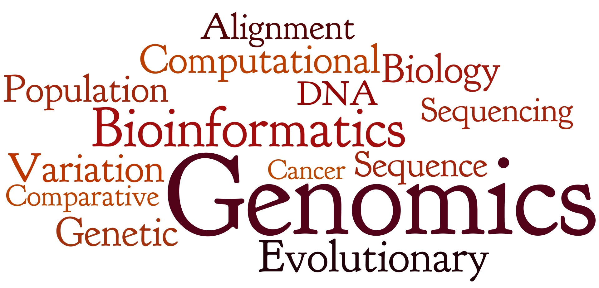

Mohammad Shabbir HasanPh.D. Student, Computer Science, Virgina Tech |
|
|
Research
 My research interest mostly includes Next Generation Sequencing, Evolutionary Genomics, Bioinformatics, and Computational Biology. Previously I was involved in Software Engineering and Web Application research projects as well. During my Masters at The University of Akron, I worked with Prof. Zhong-Hui Duan on Investigating gene-gene relations in microarray data using clustering algorithms. There we developed a new clustering algorithm which combines hierarchical clustering and k-means clustering. I also worked with Prof. Dongsheng Che to predict Genomic Island in bacterial genomes. I am the developer of EGID - an ensemble algorithm to predict genomic islands in genomic sequences which performs 12.14% better than the prevoius best method.
Previously, during my undergrad studies, I also explored my research activities while working with Prof. K.M. Azharul Hasan of Department of Computer Science and Engineering, Khulna University of Engineering and Technology (KUET) to find out a mechanism for reducing development cost to make an object oriented system more reusable. You can find more detail about some of the projects here. |
|
|
Copyright © 2011- Mohammad Shabbir Hasan. All rights reserved. |
|